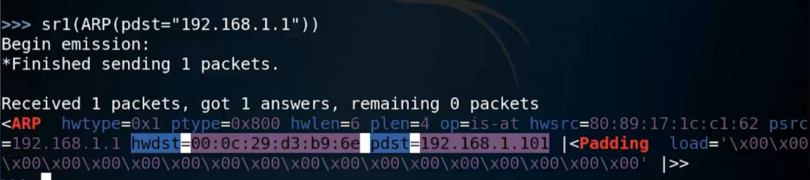
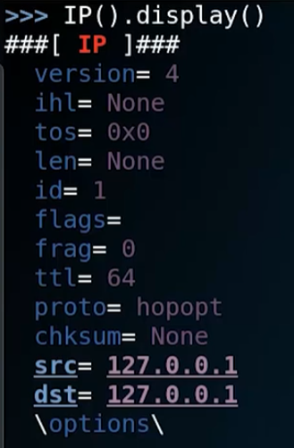

Wireshark常见协议包分析
ARP协议
- ARP协议：地址解析协议
- 简单说就是通过IP地址查找MAC地址
- Wireshake抓到的ARP包中能看到源MAC，路由等

ICMP协议
- ICMP协议：Internet控制报文协议，属于TCP/IP协议簇的一个子协议
- 用于在IP主机，路由器之间传递控制消息（指网络通不通，主机是否可达，路由是否可用等网络本身的消息）是一个四层协议包
- “ping”命令走的就是ICMP协议
- 一个request包（Type=8）和一个relay包（Type=0）为一组
TCP协议
- TCP协议：传输控制协议
- 是一种面向连接的、可靠的、基于字节流的传输层通信协议。是四层协议
- “ping”命令走的就是ICMP协议
- 一个request包（Type=8）和一个relay包（Type=0）为一组
- 三次握手图解
UDP协议
- UDP协议：用户数据报协议
- 无需建立连接就可以发送封装的IP数据报。是四层协议
- 不可靠，容易超时
DNS协议
- UDP协议：用户数据报协议
- 无需建立连接就可以发送封装的IP数据报。是四层协议
- 不可靠，容易超时
HTTP协议
- HTTP协议：超文本传输协议
- 是一个基于请求与响应模式的、无状态的、应用层的协议。